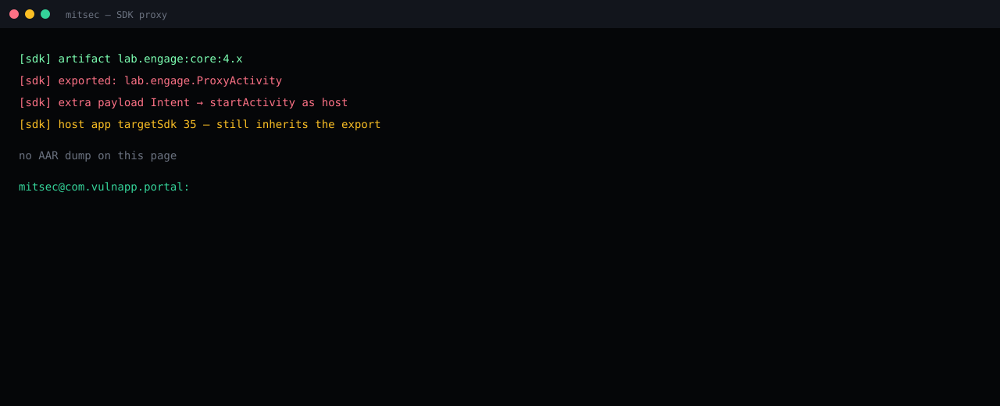

The host did not export a router. The dependency did.
Merged manifest + DEX on the authorized lab APK.
lab.engage.ProxyActivity exported. Extra Intent → startActivity.
Bump the AAR. tools:node="remove" the activity. Do not wait for targetSdk.
Summary
Lab package com.vulnapp.portal ships lab.engage:core:4.x for in-app messaging. The host’s own activities are not exported. The merged manifest still contains lab.engage.ProxyActivity with exported=true. That activity reads a nested Intent extra and calls startActivity. The launch identity is the portal — not the SDK vendor.
This is the same sink as the Intent-redirection note. The difference is ownership. The developer never wrote the router. Play / program reports that only scan first-party package names miss it.

What AndroScope printed
[sdk] artifact lab.engage:core:4.x [sdk] exported: lab.engage.ProxyActivity [sdk] extra payload Intent → startActivity as host [sdk] host app targetSdk 35 — still inherits the export no AAR dump on this page mitsec@com.vulnapp.portal:
Why targetSdk 35 does not save you
Safer Intents is a platform default on 16 when the host targets 36. A 35 host on a 16 device still launches the nested object. Even on 36, an SDK that calls the opt-out puts the hole back. The merge is the finding; the API level is a modifier.
Fix
- Upgrade the artifact until the activity is not exported. Confirm in the merged manifest, not in the vendor changelog.
- Until then,
tools:node="remove"that activity in the host manifest if the product still works. - Inventory every
exported=truethat is not in your source tree. - Report it as a host issue. The UID that will be abused is yours.